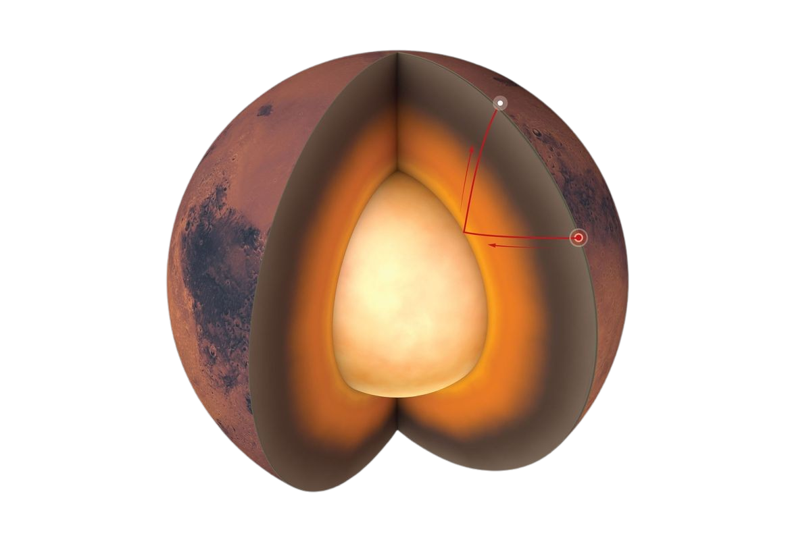

Mars, the fourth planet from the Sun, is known as the "Red Planet" due to its iron-rich, rusty surface. Roughly half the size of Earth, Mars has a thin atmosphere mainly made of carbon dioxide, resulting in drastic temperature changes between day and night. The Martian surface is home to remarkable geological features, including Olympus Mons, the tallest volcano in the solar system, and Valles Marineris, an immense canyon system. While Mars is now dry, scientists believe it had liquid water billions of years ago; today, water exists in the form of ice at the poles and possibly as salty underground reservoirs. Numerous missions, such as NASA's Curiosity and Perseverance rovers, explore Mars to learn about its history and potential for past life. This ongoing exploration fuels interest in Mars as a future target for human exploration and even colonization.

SOME INTRESTING FACTS ABOUT MARS
Red Planet Color:Mars looks red due to iron oxide (rust) on its surface.Largest Volcano:Olympus Mons is the tallest volcano in the solar system.Extreme Temperature Swings:Daytime highs can reach 20°C (68°F), while nights
drop to -73°C (-100°F).Dust Storms:Mars has the largest dust storms in the solar system, sometimes
covering the entire planet.Ancient Water Evidence:Mars once had flowing rivers and lakes, but now water
is mostly frozen.Two Small Moons:Mars has two tiny, irregularly-shaped moons, Phobos and Deimos.Future Exploration:Mars is a top candidate for human exploration and potential colonization.
Mars Hidden Wonders and Bizarre Phenomena
Ancient Ocean Hypothesis:Some scientists believe that Mars once had a vast ocean covering
its northern hemisphere, but the evidence is fragmented and debated.“Face on Mars” Illusion:In 1976, a NASA image appeared to show a face-shaped formation in the
Cydonia region, sparking speculation. Higher-resolution images later showed it as a natural mesa,
yet it remains a pop culture mystery.Hollow Mars Theory:Some suggest Mars may have large underground caverns or "lava tubes" where ancient life
could have survived. These caverns are challenging to explore but might offer clues.Ghost Dunes:Scientists discovered “ghost dunes” – fossilized imprints of ancient sand dunes buried
in lava or sediment, hinting at Mars' once active wind and climate patterns.Blue Auroras:Mars has auroras, but unlike Earth’s green ones, Mars has ultraviolet-blue auroras
due to its thin atmosphere and remnant magnetic fields.